Audio Clips and Editing Audio¶
In this chapter, you are going to learn how to work with Audio clips. and how to work with the integrated editing handles that are part of each Audio clip.
Parts of an Audio Clip¶
Notice that an Audio clip has several parts. It has a header that includes trim and slip handles. It has a body that contains the waveform thumbnail and fade handles.
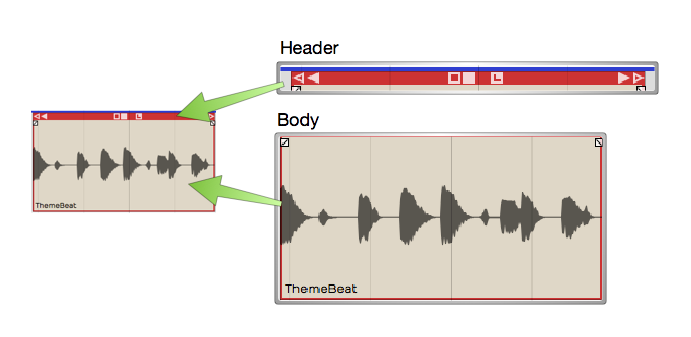
Main Parts of and Audio Clip
Header - Move Audio clips by dragging from the header. The header includes the trim handles (hollow), slip handles (solid), and other tools.
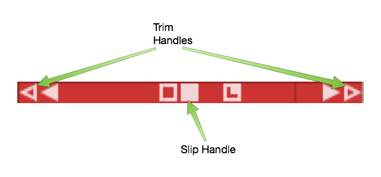
Audio Clip Header
Body - The Audio clip body features the waveform thumbnail, fade handles, and the clip name.
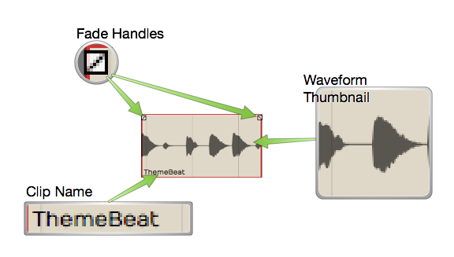
Audio Clip Body
Plugins - Audio clips can host plugins directly, so you might see one or more plugins right on the clip body. Learn more about that in Clip Effects.
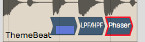
Audio Clip Effects
Properties - Like most other objects in Waveform, Audio clips have lots of additional properties and controls in the Actions panel.
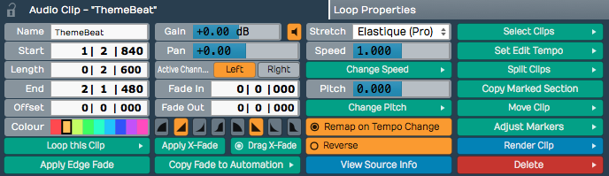
Audio Clip properties
📝 Note: If you accidentally move or edit an Audio clip, you can always press Undo (Cmd + Z / Ctrl + Z) at the top of the Menu section.
Moving Clips¶
As you move the mouse pointer over the Audio clip header, it changes to a grabbing hand. Use that to drag the clip forward or backward in time. If Snap is on, the beginning of the clip will snap by grid increments.
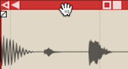
Move Audio Clips by Dragging from the Header
📝 Note: As we discussed previously, the grid resolution depends on the zoom level.
You can also drag Audio clips from track to track. With snap enabled, track-to-track drags will usually stay in sync. However, with snap turned off, it is easy move the clip slightly off time. To prevent that, hold down Shift as you drag track to track. The Shift key, constrains the timing of track to track drag moves.
💡 Tip: Another way to move a clip track-to-track without changing the timing is to use nudge. Select the clip the hold down Shift and press Up Arrow or Down Arrow to nudge it to another track.
Deleting Clips¶
The easiest way to delete a clip is to selected it and press Delete or Backspace. The cut (Cmd + X / Ctrl + X) keyboard action does the same thing. If you need yet another way to delete, locate and click the convenient Delete button in properties.
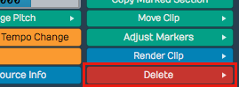
Audio Clip properties Delete button
💡 Tip: As you work with clips sometimes you just want clear the selection. The fastest way is to just hit Esc.
Audio Clip Handles¶
Each Audio clip header includes six handles that you use for trimming, slipping, stretching. These are represented as four arrows and two boxes.
Trimming - Hollow left and right arrows on both of the upper corners of the clip are trim handles. Grab a trim handle and drag left or right to trim the start or end of the the clip. Notice that trimming this way directly changes the Start and End values in properties. With Snap turned on, trimming snaps to the grid. To trim freely, hold down Cmd / Ctrl as you drag or turn Snap off.
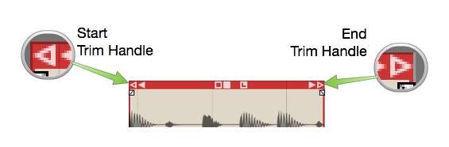
Audio Clip Trim Handles
Slip Editing - Slip editing means moving the waveform within the clip without altering its Start, Length, or End values. Drag the solid box shaped handle left or right to slip edit. You can override snap-to-grid during slip editing by holding down Cmd / Ctrl.
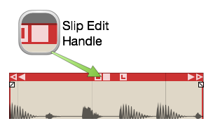
Audio Clip Slip Handle
Reframing - The hollow box shaped handle allows reframing the clip. Drag it left or right and the clip moves but the waveform doesn't. It essentially allows you to reframe the audio without affecting its timing.
Slip Trimming - The solid left and right arrow handles are for slip trimming. Try dragging the left solid arrow. Notice that it moves the clip Start while keeping the End planted. Now try the right solid arrow. Moving that one, moves the End while keeping the the Start planted. Although this operation seems similar to trimming, the difference is that the underlying waveform slips relative to the end that is not moving.
💡 Tip: With Snap on, hold down Cmd / Ctrl as you drag to temporarily override snapping for most editing operations.
Video Clip: Basic Audio Editing
Splitting a Clip¶
Splitting Audio clips, is essential for audio editing. Here is the quickest way:
- Select the clip
- Position the cursor where you want to make the split
- Press slash (/)
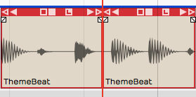
Audio Clip, Right after Split
💡 Tip: If you want to make numerous splits, you can keep holding down the left mouse button as you drag the cursor and press slash (/) - never lifting the mouse button.
Audio clip properties also include Split Clips actions. Look to the far right in properties and find the Split Clips button. You will find options to slip at the cursor along with options to split at the in-marker or out-marker. Keep in mind that these actions will only affect selected clips.
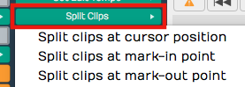
Audio Clip properties, Split Clips actions
Duplicating Clips¶
To duplicate one or more clips, select the clip and press D. That will copy the clip and paste it right after the original clip. Duplicate works like copy and paste, all in one action.
💡 Tip: If you want to use a different key for the duplicate action, you can change it in Settings tab > Keyboard Shortcuts > Editing Functions: Duplicate.
Fade-in/Fade-out¶
In the upper corners of the Audio clip body, notice the fade handles. Each is shaped like a tiny box with a diagonally line through it. Grab a fade handle and pull it inward. This action draws a fade-in or fade-out.
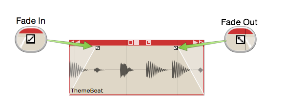
Audio Clip Fades
Video Clip: Fade-in/Fade-out Demo
By default, you will get a linear fade, but there are other fade types available in properties for the clip. For more control, directly edit the Fade In and Fade Out numerical values in properties.
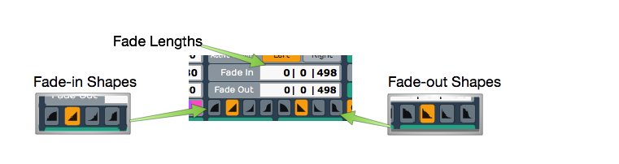
Audio Clip, Fade properties
Pitch Fade¶
Right click on the fade handle, and you can select between a volume fade and pitch fade. Pitch fade gives you a very cool tape stop effect or tape run-up effect. The fade graphic is shaded darker than for volume fades.
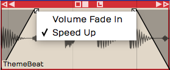
Right-click Fade Handle, Pitch Fade Speed Up
Here is a video tutorial demonstrating pitch fade:
Crossfades¶
A crossfade is fading out one Audio Clip while fading in another. Some controls in Waveform are labeled "X-Fade" when referring to crossfade. Here are the steps to create a crossfade:
- Drag a clip so that it it overlaps another one somewhat.
- Press X on the keyboard.
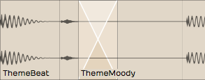
Crossfaded Audio Clips
That's it: a crossfade. It's a fade-out that overlaps the fade-in of the next clip. You can adjust the fade shapes using the buttons in properties, just like any other fade.
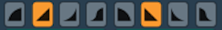
Fade-in/Fade-out Shape Buttons
📝 Note: Keep in mind that the fade shape buttons only operate on the selected clip. You will need to select the clip on the appropriate side of the crossfade for the fade shape buttons to work.
Drag Crossfade¶
The Settings tab, General page has a setting labeled Default Drag X-Fade. It has two possible settings: On by default or Off by default. When set to On by Default, the simple act of dragging a clip so that it overlaps another clip will create a crossfade. Other DAWs call this "auto-crossfade."
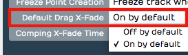
Settings Tab, General page, Drag Crossfade Default
📝 Note: In Waveform, Drag-X Fade is actually a property of each Audio clip. When you change Default Drag X-Fade it will only take effect for new clips you create or add to the Edit.
Edge Fades¶
When editing, sometimes you need to apply short fades to both edges of an Audio Clip to avoid popping. This is especially true if you split a clip in the middle of a note. The solution is add as short fade-in and fade-out to the clip. Waveform calls those "edge fades."
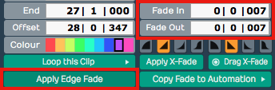
Apply Edge Fade
The good news is that you can instantly add edge fades by clicking Apply Edge Fade in properties. This applies 7 ms fades to the start and end of all selected clips.
Copy and Paste¶
Typical cut, copy, and paste commands also work with with Audio clips:
- Cut (Cmd + X / Ctrl + X)
- Copy (Cmd + C / Ctrl + C)
- Paste (Cmd + V / Ctrl + V)
Clip Gain, Mute, & Pan¶
Adjusting the gain of an Audio clip is great tool for mixing. Simply split out one phrase, or even one note and tweak the gain level. Waveform has not only clip gain but also clip mute and pan - all available in properties. When working with stereo Audio clips, Pan works as a balance control.
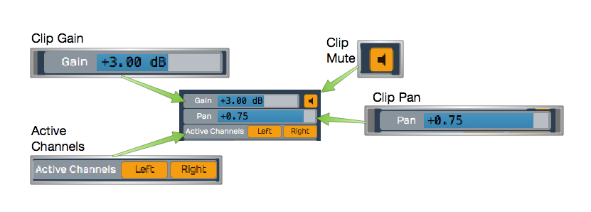
Audio Clip Gain, Mute, Pan, & Active Channels
Gain - Drag the slider left or right to adjust the Gain value. Alternatively, click the slider and type in a value directly. The gain change is reflected right away in the height of the waveform thumbnail on the clip.
Mute - Click the Mute icon to silence the clip. The waveform thumbnail will dim to gray.
Pan (Mono Clips) - Drag the Pan slider left or right to adjust the stereo placement of the clip. You can also click and type in values directly. Full left is -1.00, centered is 0, and full right is 1.00.
Pan (Stereo Clips) - With stereo Audio clips, Pan acts as a balance control. What that means is that as you slide it more right the left side gets quieter. Slide it left and the right side gets quieter. At the extreme left and right positions the opposite side is silent. The really cool thing about this is that the waveform thumbnail updates dynamically show to show the effect.
Active Channels (Stereo Clips) - For stereo clips you can turn off either the left or right channels using the Active Channels buttons in properties. When you click Left, for example, it toggles the left side off. But it's not just muting the left side, it switches the clip to a mono version of the right side material. The great thing is that the waveform thumbnail updates to show this instantly.
Reversing Audio Clips¶
Another cool thing you can do is reverse a clip so the audio plays backwards. Simply click the Reverse button in properties. The waveform thumbnail reverses and the sound will be backwards on playback.
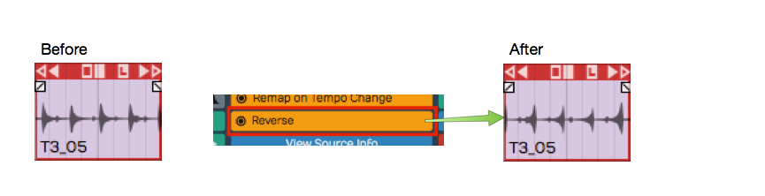
Reversing an Audio Clip
Merging Clips to One Clip¶
Following editing, you may want to combine several clips back into to a single clip. To do so, select all the clips using shift select or lasso selection. Then choose Render Clips > Merge the selected clips in properties.
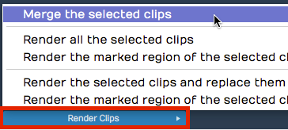
Render Clips > Merge the selected clips
In a few moments, Waveform combines them into a single contiguous clip. There are many ways to merge, render, and export that we will touch on later.
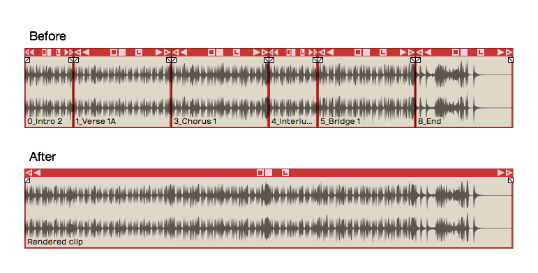
Merge Clips, Before and After
Here is video demo of merging clips:
Merge Selected Clips Video Demo
Deleting a Section of Audio Removing Space¶
You can easily delete a section of audio from one or more clips and remove the space between clips. While it's not entirely obvious how to do this, it is easy if you follow these steps:
- Set the in-marker and out-marker over the section you want to delete.
- Select all the clips on all tracks (Cmd + A / Ctrl + A)
- In the properties, choose Delete > Delete marked region of selected clips, and move up any selected clips (Cmd + J / Ctrl + J).

Delete a Section Removing the Space
Editing with ARA¶
Waveform supports ARA (Audio Random Access) plugins for deep, non-destructive pitch and time editing directly on a clip. Unlike a conventional plugin, an ARA plugin has continuous access to the clip's audio, so its edits stay perfectly in sync with Waveform's transport and loop as you work.
The most popular ARA plugin is Celemony Melodyne, and a Melodyne Essential license is bundled with Waveform — you will have received information on how to install it, along with your Waveform order. The workflow below uses Melodyne as the worked example, but any ARA plugin you install (for example VocAlign, SynthV, or SpectraLayers) appears the same way and is invoked by name.
📝 Note: ARA is available in all editions of Waveform, on macOS and Windows only. Installed ARA plugins also appear in the ARA column of Settings > Plugins.
Invoke an ARA plugin¶
- Select an Audio clip.
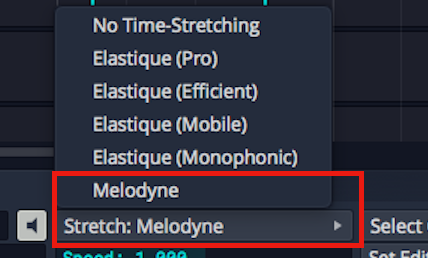
Change Stretch Property to Melodyne**
- In the properties change the Stretch property to the name of the ARA plugin you want to use. Installed ARA plugins are listed together under an ARA heading in the dropdown; choose Melodyne here. The clip's Stretch property now reads ARA: Melodyne and the plugin's name appears at the center of the clip.
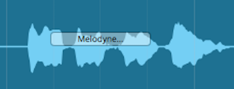
Audio Clip with Melodyne Invoked
- Click the plugin name at the center of the clip — or click Show ARA plugin editor in the properties — to open the plugin's editor.

The Melodyne UI
- Edit pitch and time by manipulating the note "blobs" in the plugin's UI. Note that the transport and loop is synchronized between Waveform and the ARA plugin as you edit.
💡 Tip: To learn all about Melodyne click Help > Manual within the Melodyne UI. Skip the section on Loading, Transferring and Saving, as those operations are handled automatically by ARA.
📝 Note: While a clip is in ARA mode, warp time, reverse, and Speech-to-Text are unavailable for that clip.
Here is how to remove an ARA plugin from a clip:
- Select an Audio clip that is using an ARA plugin.
- In the properties change the Stretch property to No Time-Stretching or a time-stretch algorithm such as Elastique Pro. The ARA plugin is removed from the clip.
Reopen the editor from the clip¶
While a clip is in ARA mode, the clip strip shows a small "
Convert an audio clip to MIDI¶
When a clip is in ARA mode, the properties show a Use ARA plugin to convert this audio clip to MIDI button. Clicking it uses the plugin's note analysis to create a new MIDI clip — with the same name, start, and length — and replaces the audio clip on that track. This is a quick way to turn a monophonic part, such as a vocal or bass line, into an editable MIDI performance.
Video Clip: Here is a video clip that explains how to invoke Melodyne in Waveform.
Group Clips¶
With Group Clips, you can combine clips on a track into a single grouped clip without rendering. The advantage of this is that you can ungroup at any time for access to the individual clips.
To create a Group Clip, select the clips you want to group on a track. It doesn't have to be a contiguous selection, but the clips do need to reside on the same track.
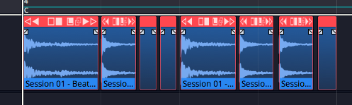
Next, click Create Group Clip in the Actions panel.
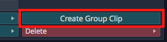
Create a Group Clip from the Actions panel
Notice that the resulting clip has a "Group" label and icon on the lower left which indicates the number of clips it contains. It also has a simplified header.
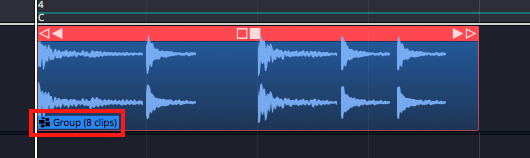
A Group Clip
To ungroup the clip back to the original state, select it and click Ungroup in the Actions panel.
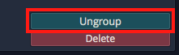
Ungroup from the Actions panel
If you like, you can create a macro and assign Group Clips and Ungroup to keyboard shortcuts. In the Script Editor, locate the actions under Basic Actions > Editing > Group selected clips and Basic Actions > Editing > Ungroup selected clips.
Here is the code:
// Group Clips Macro
Tracktion.groupSelectedClips();
// Ungroup Clips Macro
Tracktion.ungroupSelectedClips();
Group Clips can be useful when working with beats created from sliced up audio. You can treat the Group Clip as a single clip, making move and duplicate operations straightforward. At any point you can ungroup it to modify the various parts.
Linked Clips¶
You can also easily create linked copies of clips that reference the same underlying audio file or MIDI data. Changes to the original clip are then reflected in any of the linked copies. This works for Audio clips, MIDI clips and Step clips.
To create a linked clip, drag the Linked Clip handle from the clip header. As you drag, you are dragging a copy referenced back to the source clip.
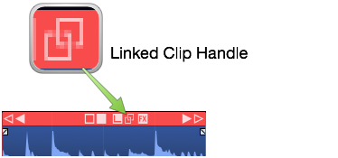
Linked Clip Handle
In the following image, we have dragged over a linked copy of an audio file. Notice that the lower left of each clip shows a "link" icon indicating that this is a linked clip.
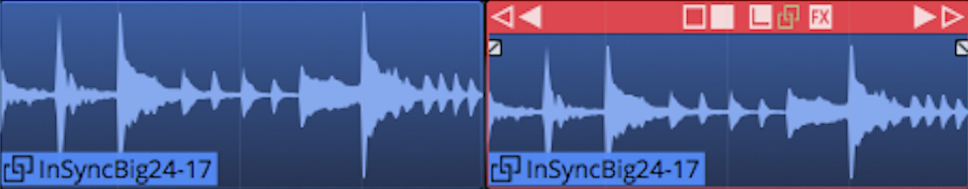
Linked Audio Clips
To test the link, we have reversed the audio on the first clip. Since this changes the underlying file, the second clip is also reversed.

Reversed Linked Audio Clips
Non-destructive edits like splits and fades don't affect the linked copy. However, anything that affects the underlying file will. For other examples of this type of edit, select an audio clip then in the Actions panel open View Source Info > Edit Audio File > Basic Editing Operations.
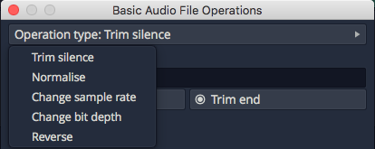
Basic Audio Editing Operations
From this dialog you can perform several kinds of edits to the underlying file. These operations will affect all linked copies as well as the original.
Linked clips might be even more useful for MIDI clips. Any changes made to one of the linked clips are reflected in all the copies. This can be useful when creating a beat that is used in many places in a song. If you update one linked copy, they all get revised.
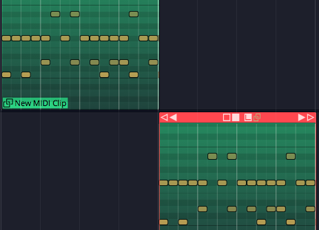
Linked MIDI Clips on Separate Tracks
While you could do something similar with looped clips, looped clips are a series of continuous repeats on a single track. Linked clips appear as separate clips and can even be placed on separate tracks.
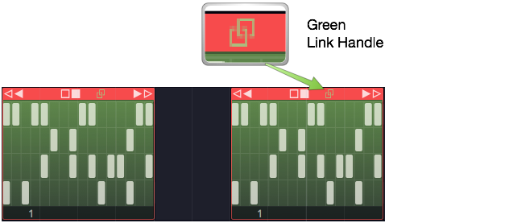
Linked Step Clips Green Handle
Step clips can also be copied using the Linked Clips handle.
💡 Tip: It's a bit more difficult to identify linked Step Clips because they don't have clip names along with the link icon. You can identify linked Step Clips because the Linked Clip handle in the header turns green whenever there are linked copies present. This holds true for linked Audio clips and MIDI clips as well.
Moving On¶
Those are the simple but powerful tools in for editing Audio clips in Waveform. We didn't even cover time stretching, Warp Time. But, these are the fundamentals. Let's move on to looping Audio clips in the next chapter.